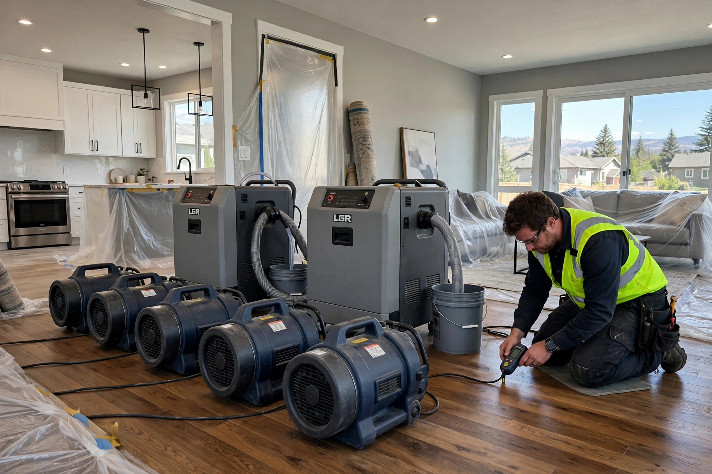

Home / Meridian / Water Damage Restoration
Meridian, Idaho · Full water damage restorationWater Damage Restoration in Meridian, ID
Extraction is only the first hour. Restoration is the whole job: water removed, the structure dried to safe moisture levels, ruined material cut out, and the room rebuilt like the leak never happened.
Meridian homes are mostly newer, and water moves through them differently than through old plaster and pine. One call starts the full sequence, from the first pump to the final coat of paint.

Why Meridian homes need restoration
Four local patterns behind most Meridian calls.
Speed-built subdivisions
Meridian added thousands of homes fast, and production schedules reward speed. Missed window flashing or a shower pan sealed too early can hide for years. The first sign is often a soft spot in drywall, long after the builder's warranty expired.
A long irrigation season
Canal laterals water the valley from April into October, keeping soil around many Meridian foundations damp for months. When grading slopes toward the house, or a downspout dumps beside the foundation, ground moisture pushes through slab edges into lower wall plates, feeding slow damage that shows up as buckling laminate.
New-plumbing failures
Rapid growth means constant installs: water heaters, softeners, fridge lines, irrigation tie-ins. A loose fitting can release gallons while everyone is at work. Know your whole-house shutoff valve, because the difference between a mop-up and a restoration is measured in hours.
Hard freezes on exposed runs
January cold snaps find the weak spots: supply lines in unconditioned garages, hose bibs on north walls, and backflow preventers that never got winterized. A split pipe can run for hours unnoticed, wicking water two feet up the drywall past the visible wet line.
Sources: EPA — Mold, Moisture & Your Home CDC — Mold and Health
Restoration questions, answered
How is restoration different from water extraction?
Extraction is stage one of six. Restoration adds moisture mapping, multi-day drying, removal of ruined material, mold prevention, and the rebuild. Extraction alone leaves wet drywall that looks fine for a week, then grows mold.
How long does the drying take?
Three to five days of active drying for most Meridian jobs, depending on how much got wet. Daily meter readings decide when equipment comes out, not the calendar. The rebuild adds another week or two after that.
Do you handle the rebuild too?
Yes. Drywall, texture, paint, baseboards, and flooring go back in as part of the same job. Texture and paint are matched to the surrounding walls.
Will my homeowner's insurance cover this?
Sudden events like burst supply lines are treated differently than slow leaks. Everything is photo-documented with moisture readings for your adjuster. The coverage call is your insurer's.
Can mold start before the drying finishes?
It can begin within a day or two on wet drywall, which is why drying starts immediately. The CDC notes damp indoor air can irritate airways (CDC — Mold and Health). Visible growth gets containment and full removal as part of the job.
What restoration actually involves
Six stages, in order. Skip one and a "dry" room grows mold three weeks later.
Emergency extraction
Standing water comes out first, with extraction equipment that pulls moisture from carpet pad and subfloor, not just the surface. The faster bulk water leaves, the less migrates into walls. This usually finishes the same day you call.
Moisture mapping
Before anything dries, the crew maps how far the water traveled. Pin meters read moisture inside drywall and framing; thermal cameras find damp patches behind paint that looks fine. In Meridian's newer homes this matters because water runs along vapor barriers and engineered joists, so the wet footprint is wider than the visible stain.
Structural drying
Air movers and dehumidifiers run for days while daily meter readings track progress. The target is documented moisture content back near the home's normal baseline. Meridian's tight, well-insulated walls release trapped humidity slowly, so sealed cavities get extra drying time.
Controlled demolition
Some material cannot be saved. Wet drywall below the flood line, saturated insulation, swollen baseboards, and soaked carpet pad get cut out in clean lines for easy patching. Sound framing and subfloor stay. Every cut is photo-documented for the insurance record.
Mold prevention
Once dry, exposed framing gets an antimicrobial treatment to discourage growth during the rebuild. This is prevention, not remediation. The EPA stresses that moisture control is the real fix, since spores only need dampness to colonize (EPA — Mold, Moisture & Your Home). Visible growth gets full containment and removal instead.
Rebuild
Drywall goes back up, seams are taped and textured to match, baseboards are reinstalled, and flooring is replaced or re-laid. Paint and texture matching gets real attention, because a slightly-off patch will bother you every day for years.
What a typical restoration looks like
Typical scenario (illustrative example — not a past job)
A family in a ten-year-old Meridian subdivision comes home to a flooded laundry room and a squishing hallway carpet; the washer supply hose let go after breakfast. Extraction clears the water that evening. Mapping finds it ran under the hallway wall and wicked up the next room's drywall. Four days of drying follow. The bottom two feet of drywall and the carpet pad come out; the framing dries clean and stays. New drywall, texture, paint, and pad go back in, and two weeks later the hallway looks untouched.
Water where it should not be? Start the full fix.
One call covers extraction, drying, demolition, and rebuild. Describe what you see.